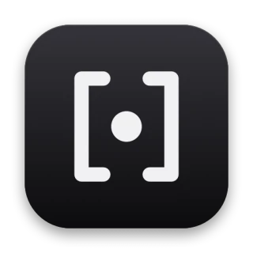
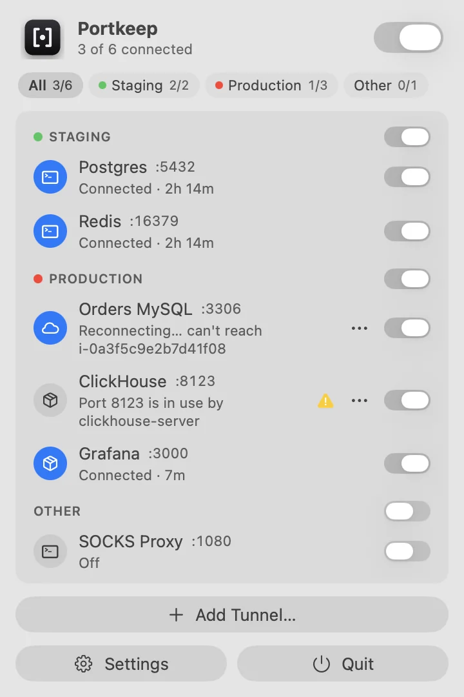
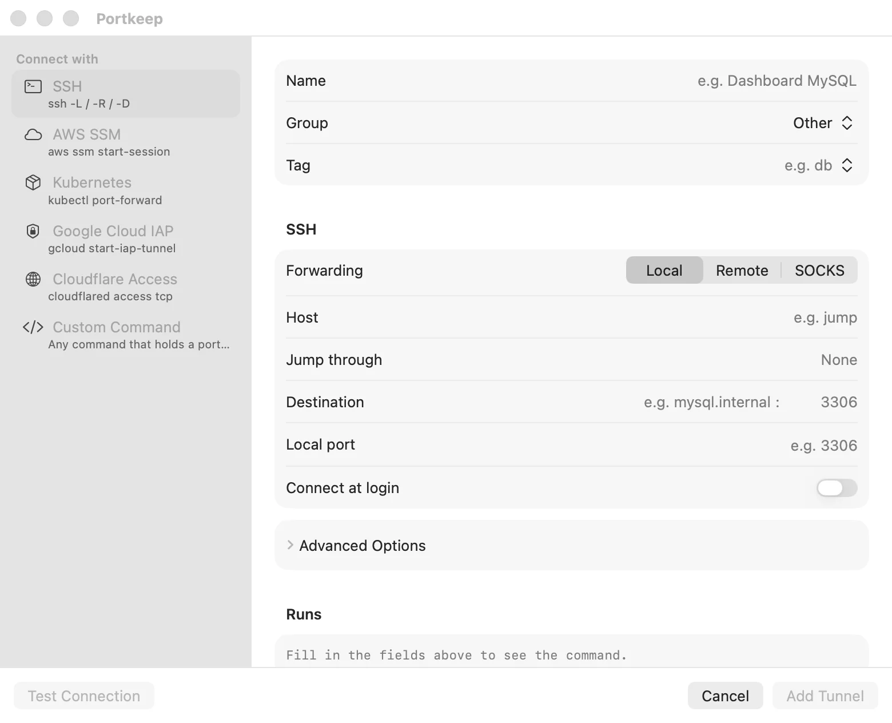

Portkeep
Keep your port forwards up, from the menu bar.
brew install --cask rattamnoon/tap/portkeep
macOS 14+, free and open source (MIT)
Name each tunnel once. Switch it on when you need it. Portkeep keeps it alive.
For the databases, caches, dashboards and SOCKS proxies you reach through SSH jump hosts, AWS Session Manager, Kubernetes and more. When a tunnel drops, Portkeep says which one, why, and that it is already reconnecting.

Keep SSH tunnels alive, without a terminal tab.
A terminal tab running ssh -N -L 5432:db:5432 bastion works until the laptop sleeps, the Wi-Fi changes or the session times out. Then your database client is the first to find out. Portkeep is an SSH tunnel manager for Mac that replaces those tabs.
- Honest status
- A tunnel shows Connected only when its local port actually accepts connections. A running process isn’t enough.
- Automatic reconnect
- After sleep, a network change or a dropped session, it reconnects. Retries back off from 1 s to 60 s, and none are spent while you’re offline.
- Failures explain themselves
-
Each comes with the fix one click away.
- Host key changed for bastion
- AWS sign-in expired for profile prod
- Port 8123 is in use by clickhouse-server
- One switch per port
- Production and Development MySQL can both sit on 3306. Switching one on switches the other off first, so changing environment is one click and your client keeps the same address.
- On demand
- Set a tunnel to Start when an app connects and Portkeep holds the port, shows Standing by, and opens the real tunnel the moment your client connects. It stops again after 10 idle minutes.
- Notifications
- When a tunnel has been down for 30 seconds or needs you, macOS tells you once, and again when it’s back.
SSH, AWS SSM, kubectl and more.
SSH tunnels, AWS SSM port forwarding, kubectl port-forward, Google Cloud IAP and Cloudflare Access, from one menu. Portkeep drives the tools you already use, with your existing config and credentials, and shows the exact command it runs. It never stores passwords, keys or tokens.
- SSHLocal
-L, remote-R, SOCKS-Dand ProxyJump, with hosts from~/.ssh/configssh - AWS Session ManagerTo the instance or to a host behind it. SSO profiles sign in when they expire
aws ssm start-session - KubernetesA service, deployment or pod in any kubeconfig context
kubectl port-forward - Google Cloud IAPThrough Identity-Aware Proxy, signed in with gcloud
gcloud compute start-iap-tunnel - Cloudflare AccessTCP through a Cloudflare Access application
cloudflared access tcp - Custom commandAnything that holds a port open;
{port}is filled in for youyour command

Scriptable from the shell, or a link.
Homebrew installs the portkeep command; without it, use Settings › General › Install Command Line Tool… Names and groups match ignoring case. The same commands work as URLs from Shortcuts, Raycast or a script’s open.
portkeep list # name, group, port, state
portkeep status "Orders MySQL" # exits 0 when connected
portkeep start "Orders MySQL" # also stop, toggle
portkeep start-group Development # also stop-group, start-all, stop-all
portkeep open # Settingsportkeep://start?name=Orders%20MySQL
portkeep://stop?group=Production
portkeep://toggle?all
portkeep://open?name=RedisQuestions, answered.
How do I keep an SSH tunnel alive on macOS?
Add it to Portkeep and switch it on. Portkeep restarts the tunnel after sleep, a network change or a dropped session, backing off from 1 s to 60 s between tries and spending none while you’re offline. It shows Connected only when the local port actually accepts connections, and tunnels that were on when it quit come back at the next launch.
Is Portkeep an autossh alternative?
Yes, for keeping port forwards up. Like autossh it restarts ssh when the connection drops, and it adds a menu bar switch and live status per tunnel, a check that the local port is free before starting, and a plain-language reason when a tunnel fails. It also drives AWS SSM, kubectl, Google Cloud IAP, Cloudflare Access and custom commands, not only SSH.
How do I port forward to RDS through AWS SSM from my Mac?
Add a tunnel with the AWS Session Manager method, pick your AWS profile, enter the ID of an instance that can reach the database, and set the RDS endpoint and port as the remote host and port. Portkeep runs aws ssm start-session for you and keeps it up. You need the AWS CLI and session-manager-plugin; SSO profiles sign in again when they expire.
Why does kubectl port-forward keep disconnecting, and how does Portkeep handle it?
kubectl port-forward exits when its connection to the pod breaks, for example when the pod restarts, the laptop sleeps or the network changes, and it does not restart on its own. Portkeep notices, says so in the menu, and runs it again with the same service, deployment or pod and kubeconfig context, backing off between tries.
Does Portkeep store my passwords or keys?
No. Portkeep never stores passwords, keys or tokens. It runs the tools you already use with your existing ~/.ssh/config, AWS profiles and kubeconfig, so authentication must already work without typing; add passphrase keys with ssh-add --apple-use-keychain.
How do I switch between production and development databases on the same port?
Give both tunnels the same local port, such as 3306. Switching one on switches the other off first, so changing environment is one click and your database client keeps the same address.
How do I install Portkeep?
Run brew install --cask rattamnoon/tap/portkeep, or download the .dmg from GitHub Releases and drag Portkeep to Applications. It needs macOS 14 Sonoma or later, on Apple silicon or Intel. Releases aren’t notarized yet, so the first time, right-click Portkeep in Applications and choose Open.
Is Portkeep free?
Yes. Portkeep is free and open source under the MIT License, and the code is on GitHub.
Get Portkeep.
Requires macOS 14 Sonoma or later, on Apple silicon or Intel. Releases aren’t notarized yet, so the first time, right-click Portkeep in Applications and choose Open.
brew install --cask rattamnoon/tap/portkeep
Help Portkeep.
Portkeep is free, open source, and made in the open. Here is how to help it get better.
- Star it on GitHub The simplest way to say it’s useful, and to help others find it.
- Report a bug Include the tunnel’s method, what the menu said, and the lines from Show Log.
- Request a feature Describe the tunnel you keep open and what gets in the way.
- Contribute Build it, run the tests, and send a pull request. The guide has the details.